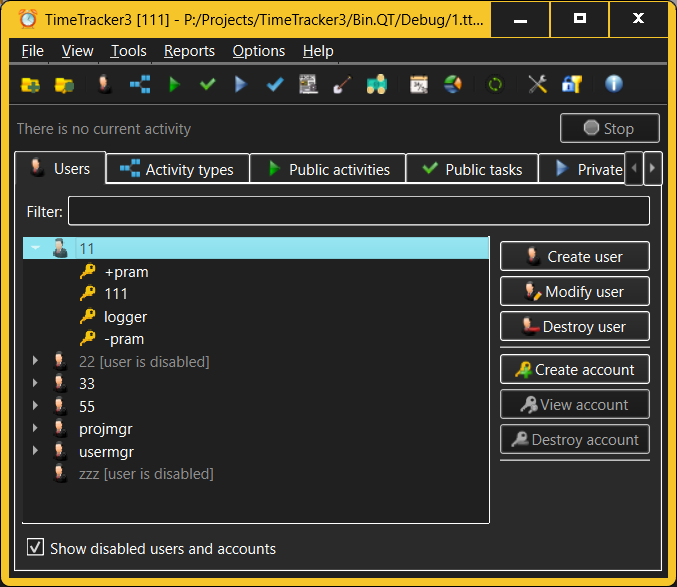

Administrator skin
The Administrator skin is the most comprehensive skin that TimeTracker3
offers as its user interface. Its primary goal is to simplify the workspace
administration tasks; however, it can also be used effectively for normal
day-to-day operation. This is the skin the users see when they first start
TimeTracker3.

Individual controls offered by the Administrator skin are:
- Menu bar - located at the top of the TimeTracker3
window, it provides all administrative and day-to-day commands that
TimeTracker3 offers to the users. Presently, the set of these commands is
fixed, as are keyboard shortcuts assigned for quick invocation of the more
frequently used commands.
- Toolbar - is located just under the menu bar and
presents a graphical view of the more frequently used TimeTracker3 commands
for quick invocation with a single mouse click (on all screens) or a single
touch (for systems with touch screen).
- Current activity indicator - located right under the
toolbar, this field indicated which Activity or Task is currently being
recorded and for how long. If the recording is underway, the special Stop
button allows stopping it, recording the corresponding Work item. NOTE that
the Work item will also be recorded if a recording of a new Activity or Task
starts while the previous recording is still underway.
- View selector - is a tabbed area which presents all
Views that TimeTracker3 offers to the user, with each view occupying its own
tab. To switch to a particular View simply click (or tap) the corresponding
tab; keyboard shortcuts 0..9 also act to the same effect. Note that all
TimeTracker3 views strive to offer the same keyboard shortcuts to perform
the same actions (e.g. pressing the 1 key opens the Users view, etc.)
- View area - occupies the larger part of the
TimeTracker3' window. Depending on what Voiew is currently active, it will
offer the corresponding view of the current workspace and allow the user to
carry out various view-specific activities there.
You can maximize or minimize the TimeTracker3 window as you see fit, or to
change its position as desired. TimeTracker3 will remember the main window's
location and state (e.g. maximized) and, if the user decides to quit or re-start
TimeTracker3, the window position and state (maximized?) will be restored.
The one important exception is a Wayland (i.e. not X11) session on
Linux - the Wayland window compositor takes special (and questionable) pride in
completely ignoring the user's choice of where the application windows are
placed on the desktop.
See also: -